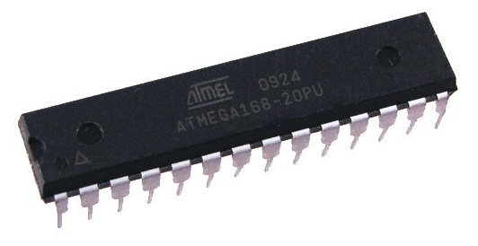

Models'2012 - KMF
An Eclipse Modelling Framework Alternative to Meet the Models@Runtime Requirements
Kevoree Team Francois Fouquet, Grégory Nain, Brice Morin, Erwan Daubert,
Olivier Barais, Noël Plouzeau, Jean-Marc Jézéquel
K M F
An Eclipse Modelling Framework Alternative to Meet the Models@Runtime Requirements
by Francois FOUQUET, Grégory Nain, Brice Morin, Erwan Daubert, Olivier Barais, Noël Plouzeau, Jean-Marc Jézéquel
- Motivations
- Requirements
- EMF Limitations
- Kevoree Modeling Framework
- Implementation details
- Validation
- Conclusion and Future Work
- Model abstraction
- to tackle
dynamic systems manipulation
- abstract systems state

- abstract systems modification
- to tackle runtime heterogeneity
- same model for several platforms
3
3
3
- to tame the complexity of Dynamically Adaptive Systems (DAS)
- heterogeneity
- distribution
- rapid evolutions
- to drive systems like
- µControllers, System On Chip


- PC-based distributed

- Cloud and grid
y Reuse the power of MDE Design tools @Runtime
- Include and run design tools directly on platforms
- Model first class entity used by runtime elements
- reduce memory overhead
- enable high versatility (different dialects)
- provide high speed accesses
Need to adapt design modeling tools for use@Runtime
One model, several reasoners
/ concurrent accesses
Ñ
Ñ
Ñ
Ñ
g
O Need
thread-safe accesses to model structure
Online/Offline operations
- several copies for several engines
Ñ
g
g
Ñ
g
O Need
efficient clone operation to fork model
Distributed usages
0 exchange layer
g
O Need
efficient (de)serialization operation
New MDE tools requirements
Model@Runtime approach places MDE tools at the corner stone of platforms
Reduce Model memory footprint
- Reduce dependencies, take the essential
Thread-safe structuresEfficient (un)marshalling and cloning
Meta-reflexive navigation ; flat generation
Connection with existing design tools
>Eclipse Modeling Framework
A framework for Java based MDE tools
" De facto MOF Java standard implementation
- Mappings
- MOF meta-classes Java classes + interfaces
- MOF multi-inheritance on interfaces, not on classes
- MOF relationships ad-hoc mutable collections
- MOF model element Java Object, created by a factory
- Meta-Meta development via EObject framework
- 8 Interoperability via EObject/XMI
- 8 Clean code, Visitor and Observer (event) patterns
included
- 8 Generated marshaller and unmarshaller
- 8 Lazy loading for memory save
- 2 POJO breakout on special relationship names
- 2 Marshaller, Cloner (reflexive) navigation via
EObject
- 2 Iterators are not thread-safe !
- 2 Registry does not allow multiple classloaders
Limitations on FSM meta-model
Large dependency set
- ~15Ko of generated code,
- ~15Mo in an executable Jar !
Static Registry, Multi-ClassLoader incompatibility
public EPackage getEPackage()
{
return Thread.currentThread().getId() == threadId ? EPackageImpl.this : descriptor.getEPackage();
}
Iterators NOT THREAD SAFE
protected E doNext(){
E next = get(cursor);
checkModCount();
lastCursor = cursor++;
return next;
}
Cloning overhead
- EObject reflexive navigation
>Kevoree Modeling Framework
A drop-in replacement for EMF generator
- P Basic ideas to meet @Runtime requirements
- Scala language as a back-end for multi-inheritance
- Remove Meta-meta dependency @Runtime
- Protect relationship from concurrent accesses
- Mappings
- MOF meta-classes Scala classes+traits
- MOF multi-inheritance Scala mixin operator
- MOF relationships Scala immutable collection+add/remove
- Objects factory (can be overridden)
- Generated code compatible Java/Scala
- Lightweight memory footprint (as Scala plain object)
- Plain Old Java Object api compatibility
- Immutable lists, for concurrent reading
- Use of Option for optional attributes prevents null pointer exceptions
- Multi-thread factory and collection modification
- Flat generated Marshaller, Unmarshaller, Cloner
a Experiments on FSM use case
Experiment using a very simple FSM Meta-model
100 000 states and transitions
|
EMF |
KMF |
Comparison |
| Model Creation |
376 ms |
313 ms |
1.2 times faster |
| Model Clone |
3588 ms |
398 ms |
9 times faster |
| Model Save |
7021 ms |
2630 ms |
2.66 times faster |
| Memory Footprint |
104MB of heap memory |
61MB of heap memory |
1.70 times lighter |
Ran on a Dell Precision E6400, Intel iCore I7 2.5GHz CPU, 16GB of RAM
|
| EMF |
KMF |
| Memory footprints |
×(104MB) |
∨(61MB) |
| Dependencies |
×(15MB) |
∨ (Scala standard library) (1.7MB) |
| Lazy Loading |
∨ |
∨ (Proxy support) |
| Thread safety |
× |
∨ (immutable lists, no registry) |
| Efficient model (un)marshalling and cloning |
∼ |
∨ (see previous table) |
| Design tools compatibility |
∨ |
∨ (through XMI compatibility) |
A model is something simpler, safer, cheaper than the reality
o Beyond the production of efficient code, MDA tools must now be themselves more effective, safer, cheaper !
Refactoring impact
- 2 Removal of EObject
- 8 eContainer has been kept
- Choose Scala/Java methods by default, methods "4(J)(S)" for Java
Single root container considered
>Conclusion and Future Work
- Design tools can be adapted to fit better @Runtime
- Generated backend must be smarter than hand written API
- Generative design must not forget API usage/compatibility
- KMF is very first step and must now address large scale runtime issuesc
- a Backbone of Kevoree Project !

- Pluggable Loader/Serializer (XMI, JSON, DB, etc.)
- Deal with very large scale models
- 8 Does not entirely fit in memory
- " Floating window model loader
- Dedicated memory zones for Models
- Off-heap memory mapping
- Control/reduce garbage collection (ex : for exploratory usage)
- Big data Model repositories (like EMF CDO ?)
- Fouquet, Francois and Daubert, Erwan and Plouzeau, Noel and Barais, Olivier and Bourcier, Johann and
Jezequel, Jean-Marc -- Dissemination of reconfiguration policies on mesh networks
- F. Fouquet, O. Barais, N. Plouzeau, J-M. Jézéquel, B. Morin and F. Fleurey. -- A Dynamic Component Model for
Cyber Physical Systems. -- In CBSE: 15th International ACM SIGSOFT Symposium on Component Based Software
Engineering. Bertinoro, Italy, June 2012.
- E. Daubert, F. Fouquet, O. Barais, G. Nain, G. Sunyé, J-M. Jézéquel, J-L. Pazat and B. Morin. -- A
models@runtime framework for designing and managing Service-Based Applications. -- In ICSE Workshop on
European Sofware Services and Systems Research - Research and Challenges (S-Cube). Zurich, Switzerland, May
2012.
- Nain, Grégory , Fouquet, François , Morin, Brice , Barais, Olivier and
Jézéquel, Jean-Marc (2010) Integrating IoT and IoS with a Component-Based approach. In Procedings of
the 36th EUROMICRO Conference on Software Engineering and Advanced Applications (SEAA 2010). Lille,
France.
- André, Francoise, Daubert, Erwan , Nain Grégory , Morin, Brice and Barais,
Olivier (2010) F4Plan: An Approach to build Efficient Adaptation Plans. In MobiQuitous.
- Brice Morin, Olivier Barais, Grégory Nain, Jean-Marc Jézéquel: Taming
Dynamically Adaptive Systems using models and aspects. ICSE 2009: 122-132
- Brice Morin, Olivier Barais, Jean-Marc Jézéquel, Franck Fleurey, Arnor
Solberg:s Models@Run.time to Support Dynamic Adaptation. IEEE Computer 42(10): 44-51 (2009)
Kevoree is open source U, try it at
kevoree.org